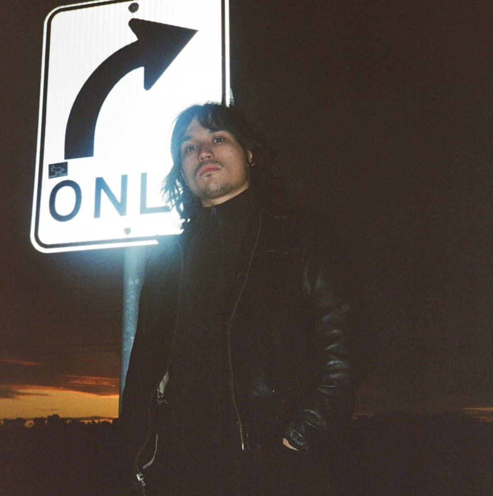

About

Mundi Movieworks is the Melbourne video practice of Aidyn Macfarlane, a camera operator, AC and editor based in Coburg.
Trained on set as a 1st and 2nd AC, Aidyn has worked on everything from independent short films to multi-camera corporate live streams, and spent two years producing studio podcasts. His short for the Melbourne 48 Hour Film Project won Best Cinematography.
Certificate IV in Screen and Media, Swinburne. Edits in Premiere Pro and DaVinci Resolve.